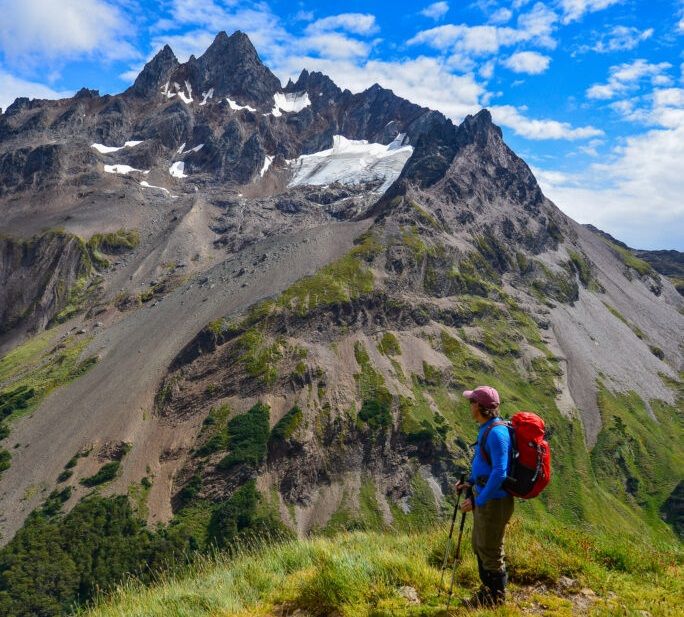
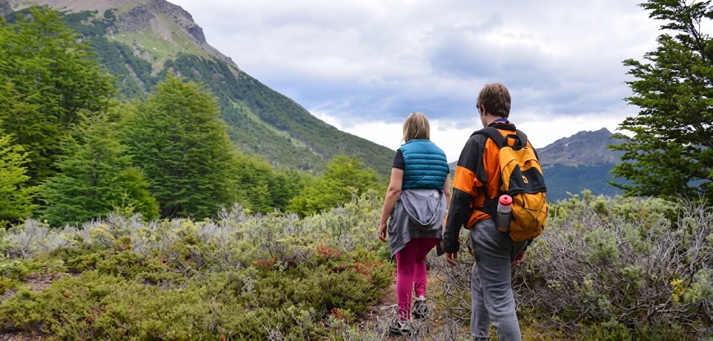

Ven a al Monte Mailen a disfrutar al máximo la naturaleza

Margarita ofrece una gran diversidad de actividades de contacto con la
naturaleza: senderismo con la posibilidad de conocer lagunas de
montaña con las extraordinarias vistas panorámicas de el Monte Mailen y sus
alrededores, cabalgatas, navegacion, kayak, canoas y la fascinante
ciudad aguardan ser visitados. Ubicado al sur, espera que lo visites.
Actividades
Trekking

Recorre los paisajes que ofrece y conectate con la naturaleza. Es
indudable que el Monte Mailen es un lugar
espectacular para realizar caminatas. Cortas o largas, con diferentes
niveles de dificultad, cerca o lejos de la ciudad. A donde sea que
vayas el paisaje te sorprende: Montañas, lagunas, arroyos, turbales y
bosques que componen un escenario único.
Cabalgatas
Realizar una cabalgata es una oportunidad para adentrarte en los
rincones del bosque margarino, disfrutar de un paseo tranquilo o
sentir el viento en la cara al galope. Hay varios lugares en la isla
para cabalgar. Desde el Centro de Mailen, a las afueras de la ciudad,
parten excursiones por el camino a la zona del Monte Mailen que se
adentran en los bosques y presentan vistas privilegiadas.
Navegacion y caminata por la isla M
Esta excursión te permite acercarte un poco más a las maravillas del
Canal Mailen. Se trata de un recorrido por las islas en embarcaciones
pequeñas -no más de 12 personas- que facilitan un mejor contacto con
el entorno. Luego de los avistajes, desembarcás en la Isla M para
hacer un pequeño trekking interpretativo de 1 hora aproximadamente.
Kayak y canoas
Margarita te ofrece la posibilidad de navegar por sus ríos, lagos y
hasta en el Canal Mailen a remo. En kayak o canoas, esta actividad te
acerca de una manera muy especial a la naturaleza. El fluir de la
embarcación en el agua, el aire fresco y un paisaje increíble
rodeándote confluyen para darte una experiencia inolvidable. Es,
además, una actividad muy divertida que pueden hacer personas de todas
las edades, en muchos casos, sin experiencia previa.
⚠️ Recordá: está prohibido hacer FUEGO en los senderos.
Solo está autorizado el uso de calentador.
Ante cualquier problema podrán comunicarse a Defensa Civil
(Tel: 105 / 912) o por radio VHF 148.121.